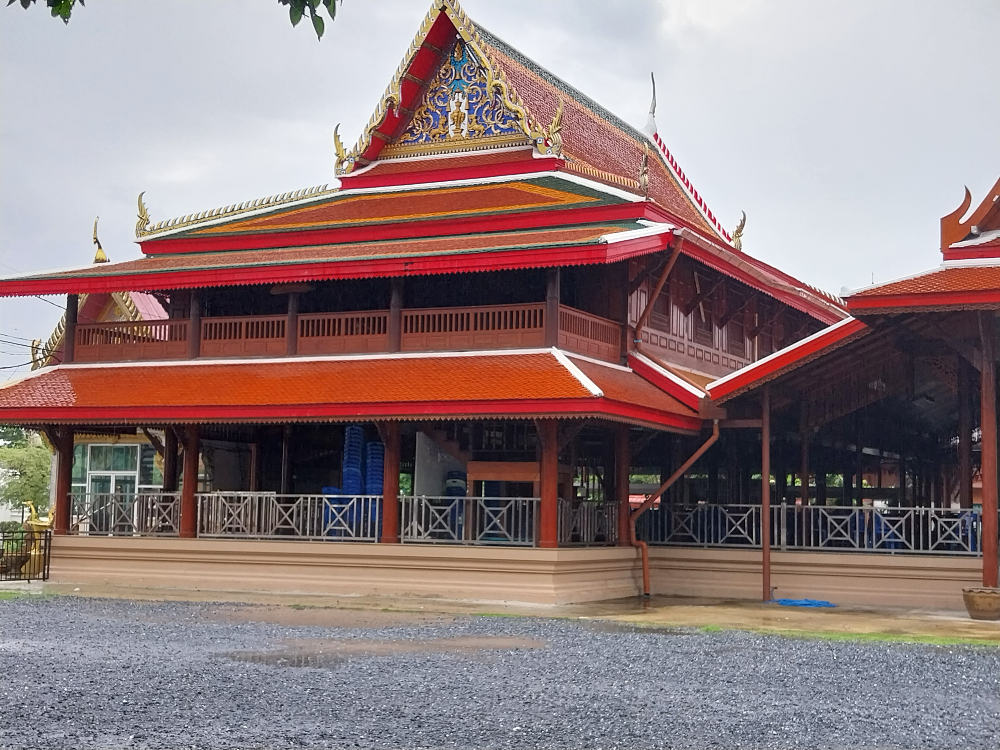
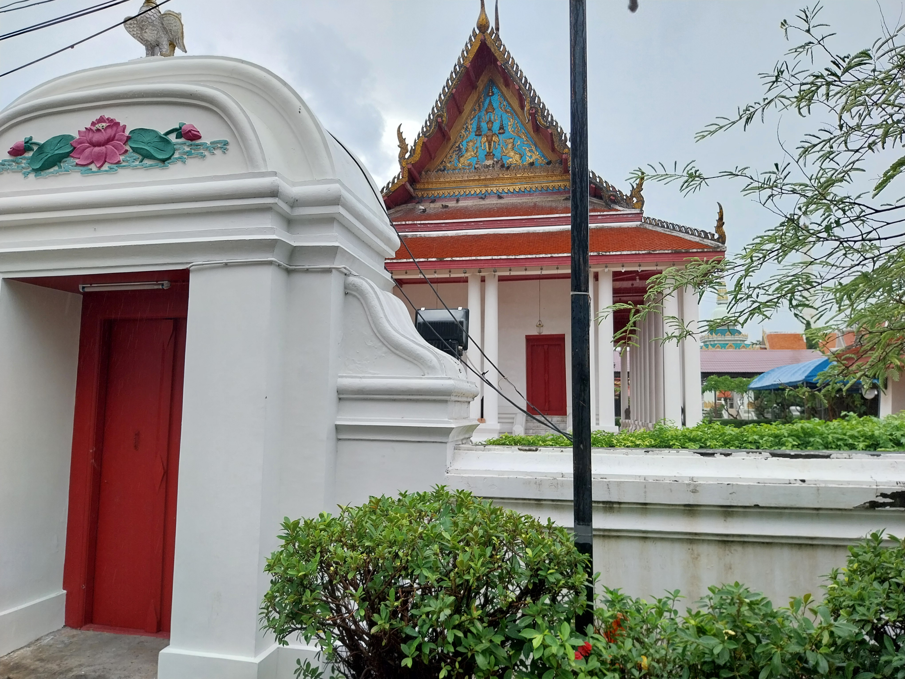
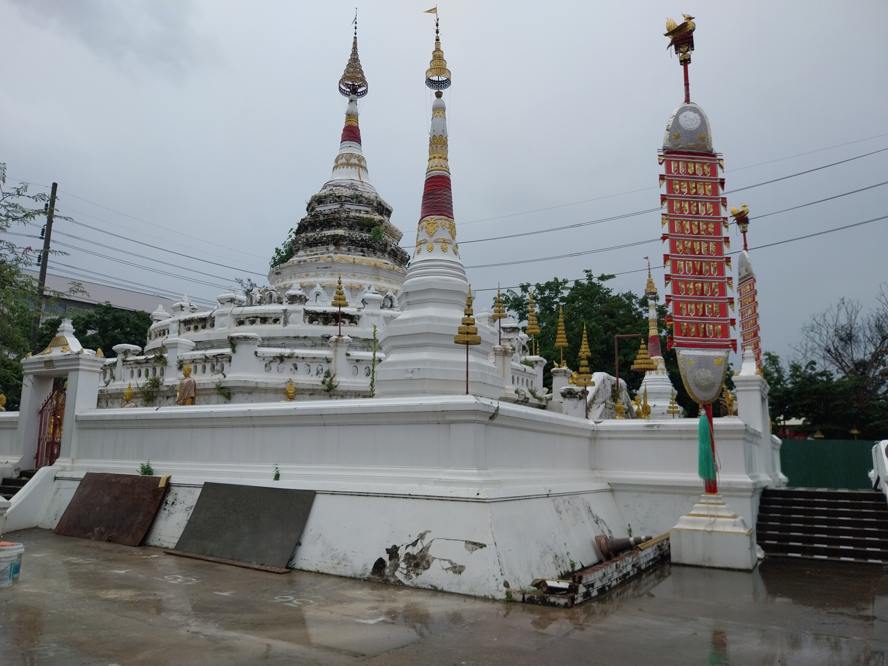

วัดทรงธรรมวรวิหาร
เป็นวัดเก่าแก่พระประแดง วัดทรงธรรมวรวิหารคือหนึ่งในพระอารามหลวงชั้นโท สร้างตามสถาปัตยกรรมมอญนับเป็นแหล่งรวมศิลปะมอญชั้นสูงที่ยังคงสภาพสมบูรณ์และงดงามอย่างหาดูได้ยากแห่งหนึ่งในประเทศไทย
รูปภาพสถานที่
  ที่ตั้ง
1200 ถนน เพชรหึงษ์ ตำบล ตลาด อำเภอพระประแดง สมุทรปราการ 10130 ประเทศไทย
เวลาเปิด-ปิด : เปิดทุกวัน 06:00 น. – 21:00 น.